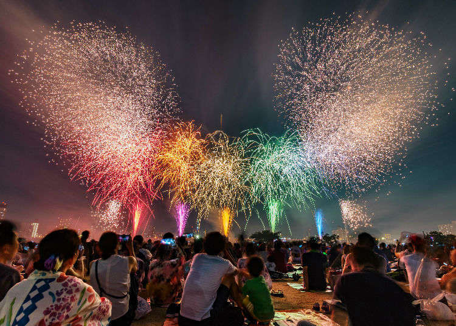

Jingu Gaien Fireworks
The Jingu Gaien Hanabi Takai is a quirky display of fireworks, famously held at the Jingu Kyujo Baseball Stadium. This firework show stands apart in that it is preceded by a number of live concerts, which invigorate the crowds. After the musical performances, guests may watch the display from their seats, which is a rare luxury in the 'early bird gets the worm' culture of most Japanese firework shows.

Edogawa Fireworks
The Edogawa Hanabitaikai is a unique firework show. Though fireworks are an extremely popular summertime event across cities in Japan, this particular exhibition pits two cities against one another: Edogawa-ku, and Ichikawa City.
The duel show is presented over the river that parts both areas, with each doing their best to be more brilliant than the other. The result is a whopping 90-minute show with music, a feast for the eyes... and for the stomach, too, as many people bring picnics! Locals also tend to wear brilliantly-colored yukata to the event, which is recommended for an authentic night out. It takes place the first sunday of August.

Adachi Fireworks
The Adachi Hanabi fireworks have a history dating back to the 1920s. Today, the festival is still responsible for heralding the start of the summer "firework season" in July, with 12,000 explosions of light and color planned for each season. Viewers take up spots along the Arakawa river, usually arriving early to secure a prime viewing spot.
Sumida River Fireworks
A fireworks display that takes place annually on the last Saturday of July along the Sumida River in the area near Asakusa and Mukojima. On the same scale as the "Tokyo Bay Taika Fire Festival" and the "Jingu Gaien Fireworks Display," the event is popular as one of "Tokyo's Big Three Fireworks Festivals.
Itabashi Fireworks
11,000 fireworks light up the night on the Arakawa River during the Itabashi Hanabitaikai. With the Todabashi bridge in the background, the popular summer display attracts a number of visitors eager to see the bright lights and brilliant displays. Many guests don summer yukata, and go early to reserve their viewing spots.
Katsushika Fireworks
Over 13,000 fireworks burst over the skies of the Edogawa River during the Katsushika Hanabi. Visitors sit on surrounding grasses, sharing food, wearing colorful traditional yukata, and marveling at the splendor of the show. The surrounding area has pleasant walks to enjoy after the frenzy and fanfare of the rocket's bursting.
Tamagawa Fireworks
The Tamagawa Fireworks is held on the Setagaya Ward Futako-Tamagawa Athletic Grounds along the riverside of Tama River. A major summer event in Setagaya. Since the riverside grounds are spacious, many families and groups come to watch the fireworks. On the same day, the Tama River Fireworks in neighboring Kawasaki is also held. You can watch both fireworks alternately shooting about 6,000 fireworks each.

Koto Fireworks
The Koto Fireworks display shoots about 4,000 fireworks from a barge on Arakawa River. The spacious Arakawa riverbank and Sunamachi Riverside Park entice many families and groups to bring mats to sit on the grass. Since the launch site is right in front, the fireworks are fantastic. Nearby roads will be blocked off, so it is best to use public transportation such as a subway and bus.